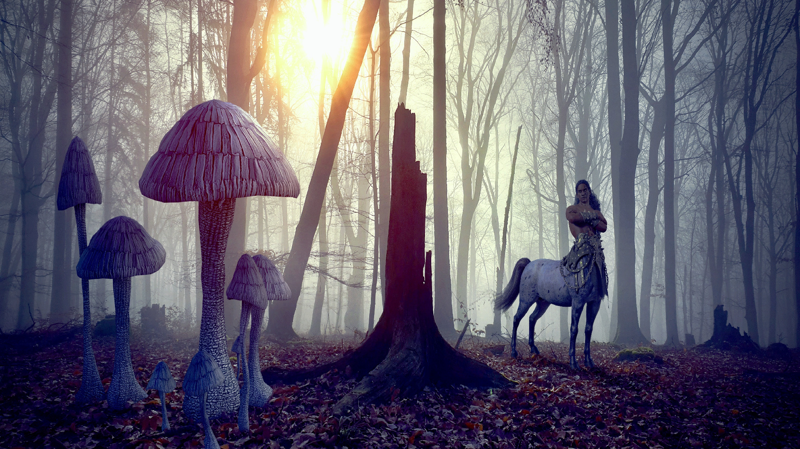
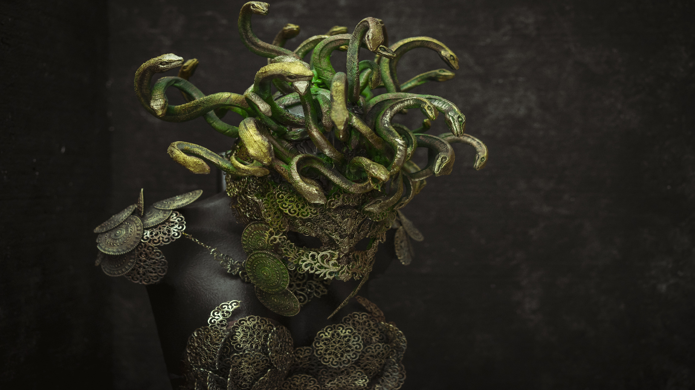

A legendary creature (mythical or mythological creature) is a type of fictional entity, typically a hybrid, that has not been proven and that is described in folklore (including myths and legends), but may be featured in historical accounts before modernity. More info...
America's most famous mythical creature is the Sasquatch (also
known as Bigfoot or
Bigfoot), a furry, forest-dwelling humanoid.
Sasquatch (from the Salish word se'sxac, meaning "wild men") have been eluding
capture
for more than two centuries, aided by the occasional deception to keep cryptozoologists and
the
FBI itself away.
On the other hand, the most famous cryptid in Canada is called the Windigo, a
mythological creature that appears in the legends of the Algonquian peoples of the East
Coast
and the Canadian Great Lakes region. The Windigo ("man-eating monster" or "cannibal")
roams the forests in search of humans to devour. Many describe it as a half wolf half maple
creature that calls its victims by name and they can't help but come.

The dragon is the most sought after cryptid in the United
Kingdom, Switzerland, Liechtenstein, San Marino and Italy. In fact, the Welsh dragon even
appears on the flag. The Welsh Dragon is said to have been discovered in an
underground
lake
below Dinas Emrys Hill in the 5th century. In 1945, a lake and a fortress dating back to the
5th
century were found during excavation work on the hill
Baba Yaga is the most famous cryptid in Belarus, Bulgaria, Montenegro, Poland,
Russia,
Slovakia and Ukraine. This being is very recurrent in the Slavic tradition and has the
appearance of an old and terrifying woman. He lives in a shack on chicken feet.
The vampire is the mythological being par excellence in Serbia, Kosovo, Macedonia and
Lithuania;
while the gnome is the most popular in Belgium, Luxembourg and the Netherlands.
Other equally curious beings are the elves (Sweden), the troll (Norway), the
leprechaun
(Ireland), the gargoyle (France), the golem (Czech Republic), the
griffin
(Greece), the centaur
(Cyprus) and the giant (Estonian).
The most famous and feared continent cryptid in Africa is the
Namibian flying snake. It
is 7.5 meters long and has a wingspan of 9 meters, a bioluminescent crest, horns, an inflatable
neck, a ferocious roar and smells of tar. The creature has been seen several times since the
1940s in the Karas region, where it feeds on cattle and scares farmers.
In addition, although they say that there are no bears in Africa, in Kenya and Rwanda there is a
legend that ensures that the Nandi bear hides in the jungle, a nocturnal beast with thick
red
fur that scalps those who frighten it.
More African cryptids to fear? Gustave the crocodile (Burundi), Anansi (Gabon,
Nigeria, Benin,
Cameroon, São Tomé and Príncipe and Equatorial Guinea), Kikiyaon (Senegal and Gambia)
Adze (Gana
and Togo), Auli (Chad) and some other elusive genius in Morocco, Mauritania, Tunisia and
Libya.

In the Middle East and Central Asia, the Jinn , better known as geniuses, are very
popular. These
beings occupy inanimate objects and take human or animal form to create magic and mischief.
As we all know from the iconic movie Aladdin, genies grant wishes and if you want to find some
Jinn, you are more likely to find them in countries like Iran, Jordan or Iraq.
Another very popular mythological creature in this region that has certain similarities with the
jinn is Bu Darya, very famous in Bahrain. This "lord of the sea" (also known as
the "sea devil") is a giant merman that sneaks onto ships at night to kidnap sailors and eat
them. Bu Darya is also known to mimic the cries of distressed sailors or women to lure in prey.
On the other hand, the dragon is the most popular cryptid in Turkey; Tulpar in
Kazakhstan and Kyrgyzstan; Al in Afghanistan and Tajikistan; Tantal in Kuwait and
Leviathan in Israel.
Credits: Traveler
To many others all those kinds of stories about ghosts and elves sounded familiar to them and they did not see anything strange. They are very ingrained beliefs. - What beliefs? -There are countless popular legends that speak of hidden supernatural beings, enchanted places and entire royal palaces carved out of cliffs and mountains by elves and how people disappear into them. "Pasaje de las sombras" (2013),
The dragon is a mythical creature typically depicted as a large and powerful serpent or other reptile with magical or spiritual qualities. Although dragons (or dragon-like creatures) occur commonly in legends around the world.

In ancient mythology, the symbolism of the majestic Fenix/Phoenix bird, which is most often connected with the Sun, dies and is reborn across cultures and throughout time. It is a symbol of immortality and growth, venerated in many ancient civilizations.

Manticore, also spelled mantichora, manticora, or mantiger, a legendary animal having the head of a man (often with horns), the body of a lion, and the tail of a dragon or scorpion.

Minotaurs is a creature type describing humanoid bull creatures, which stand on two hooves and have bovine snouts and horns. Some minotaurs have a more goat-, antelope-, or moose-like appearance

The Griffin is a mythical creature known as a half-eagle, half-lion in various cultures. In legends and folklore, the beast guards the gold of the kings, as well as other priceless possessions. Moved into the far north, this ancient creature watches over the green gold inherent in the forests.
is a divine or semi-divine race of half-human half-serpent beings that reside in the netherworld. They are principally depicted in three forms: wholly human with snakes on the heads and necks, common serpents, or as half-human half-snake beings in Hinduism, Buddhism and Jainism.